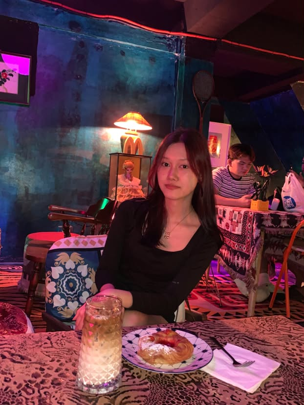
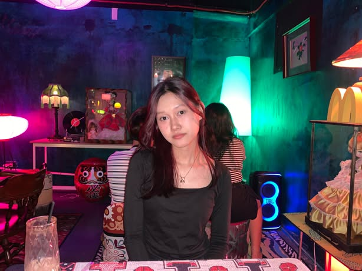

Hello! My name is Elyza Heart A. Luego, but my friends usually call me Heart.
I would describe myself as a lazy but hardworking person. I sometimes cram my schoolworks, but I always manage to get things done and submit them on time.
I consider myself a responsible person whenever I am given tasks. I am also an introvert who enjoys quieter environments and spending time with people I am comfortable with.
Fun fact: I may procrastinate sometimes, but I always find a way to get things done!
Here is a little overview of my educational background throughout high school.
| Grade Level | School | Location |
|---|---|---|
| Grade 9 - 10 | Villaba National High School | Villaba, Leyte |
| Grade 11 | Holy Child High School | Villaba, Leyte |
| Grade 12 | Brixton Senior High School | Caloocan City |
I am currently taking Computer Science (CS251). I initially decided to try coding out of curiosity, but when I started learning more about it, I realized that I actually enjoyed it.
I am still learning, but I look forward to discovering more about programming and technology.
Throughout my studies, I have had the chance to explore different programming languages and technologies.
Some of the things I have learned include:
I also worked on a UI/UX project called CommunityLink, where I experienced designing an application and learning how users interact with it.
During my free time, I enjoy watching K-dramas, listening to K-pop, playing online games, and browsing the internet.
Some of my favorite activities are:
One of my goals is to finish my degree and find a job where I can use the skills I learned in college. I want to become financially stable, support my family, and enjoy the things I worked hard for.
My dream is to travel around the world and experience different places and cultures. I also hope to find a job that allows me to work online while traveling.
My reminder: "Work hard now so I can enjoy the little things later."
I enjoy going to cafes with my friends, not really for the coffee, but more for the conversations and the time we spend together.
For me, it is always nice to have a place where we can relax, talk, take pictures, and make memories together.


Little moments, favorite people, and happy memories. ♡
Created by Elyza Heart A. Luego